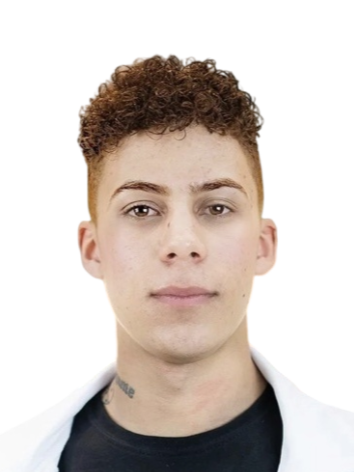

MARCOS FERREIRA DE LIMA
Data de nascimento: 01/08/2001, 23 anos
Endereço: Qd A16 Lt. 1A, Mansões Olinda, Águas Lindas - GO
Telefone: (61) 99204-9124
Email: marcosterapiacapilar@gmail.com
• Graduando em tecnologia em análise e desenvolvimento de sistemas - UNIPROJEÇÃO
• Técnico em serviços de vendas, logística e marketing - SENAC, 2018
• Gestão de negócios - ENATI, 2021
Lojas RIACHUELO
Cargo: Assistente de LPR
Período: 08/2017 - 09/2019
Função: Encarregado de realizar serviços de recebimento, processamento e reposição de mercadorias de forma ágil e otimizada, bem como de atender ao público e realizar vendas.
Farfalle hair
Função: Responsável pela organização e atendimento de forma virtual e presencial, criar e fiscalizar
campanhas de marketing em redes sociais e recepcionar clientes